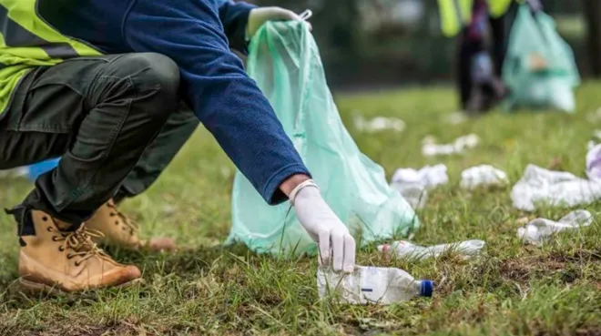

Perot Museum Camp Volunteer
I was a camp assistant volunteer for the Perot Museum of Nature and Science's Discovery camp. This summer camp gave young children exposure to the world of Science and Engineering through fun educational activities. As a camp assistant, I assisted the instructor in teaching and supervising these young children as they learn all about different topics in science. I also worked in the halls of the main museum performing pocket science and further educating visitors. For the last week of the summer camp, the other volunteers and I came together to brainstorm ideas for a new exhibit. We then were able to pitch this idea to the directors of the museum to potentially add the exhibit to the actual museum.
Keep America Beautiful Cleanup Volunteer
I was a cleanup volunteer for Keep America Beautiful, an organization focused on cleaning and maintaining communities around America. I participated in various cleanups around the Dallas Metro Area from local parks to clearing up areas near Highways. Besides just cleaning up trash from various green spaces, I also helped plant new trees and build new benches to beautify these spaces.
Habitat for Humanity
I was a home building volunteer for Habitat for Humanity, an organization focused on building and maintaining safe affordable housing for local communities. I was apart of 3 different projects to build houses in low income neighborhoods. We were able to help 3 different families who normally would not be able to afford a home.

Perot Museum Discovery Camp
Keep America Beautiful Cleanup